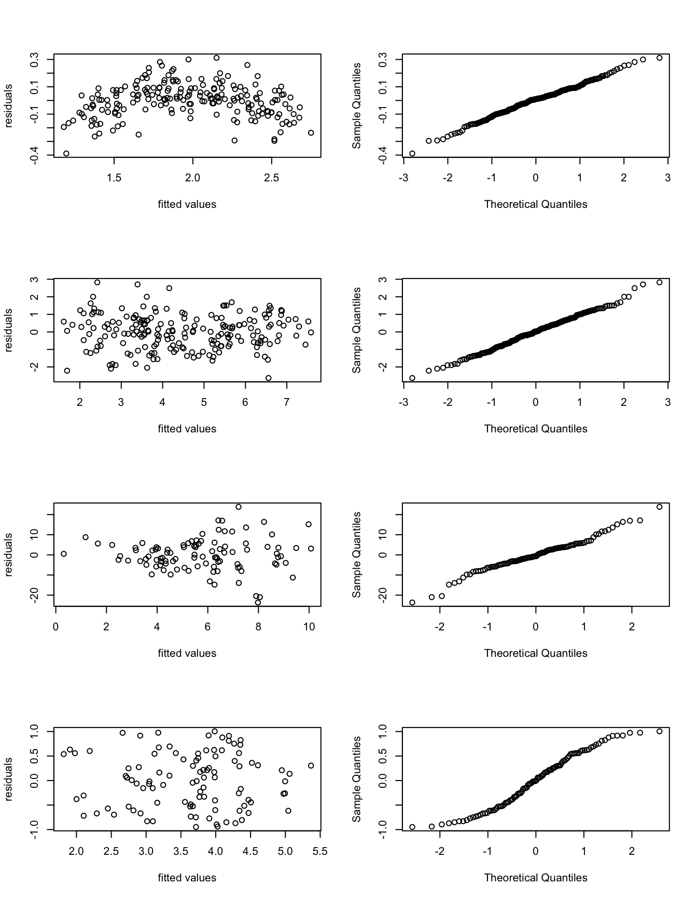

Problem Sheet 3
You should attempt all these questions and write up your solutions in advance of the workshop in week 6 where the answers will be discussed.
9. Consider the following dataset. Our aim is to predict \(y\) from the variables \(x_1\), \(x_2\) and \(x_3\).
| \(i\) | \(x_{1,i}\) | \(x_{2,i}\) | \(x_{3,i}\) | \(y_i\) |
|---|---|---|---|---|
| 1 | -2.17 | -2.08 | -2.16 | 4.47 |
| 2 | -1.35 | -0.50 | -0.74 | 5.60 |
| 3 | -1.22 | -1.00 | -1.78 | 4.16 |
| 4 | -1.04 | -0.32 | -0.40 | 5.52 |
| 5 | -0.87 | -0.39 | -0.67 | 5.27 |
| 6 | -0.41 | 0.07 | -0.66 | 4.70 |
| 7 | 0.07 | 0.74 | 0.37 | 5.50 |
| 8 | 0.25 | 0.35 | 0.02 | 4.84 |
| 9 | 0.87 | 1.28 | 0.52 | 4.92 |
| 10 | 1.53 | 2.30 | 1.35 | 5.35 |
| 11 | 2.46 | 2.55 | 1.77 | 4.86 |
| 12 | 5.00 | 5.04 | 4.05 | 5.09 |
These data are also available in machine-readable form at
Using these data:
- Fit a linear model of the form \(y_i = \beta_0 + x_{1,i} \beta_1 + x_{2,i} \beta_2 + x_{3,i} \beta_3 + \varepsilon_i\).
To fit the required model we can use the following R commands:
url <- "https://teaching.seehuhn.de/2022/MATH3714/P03Q09.csv"
x <- read.csv(url)
m <- lm(y ~ x1 + x2 + x3, data=x)The fitted model has the following coefficients:
Call:
lm(formula = y ~ x1 + x2 + x3, data = x)
Residuals:
Min 1Q Median 3Q Max
-0.104928 -0.032723 -0.001836 0.024802 0.142993
Coefficients:
Estimate Std. Error t value Pr(>|t|)
(Intercept) 4.97725 0.06026 82.598 5.15e-13 ***
x1 -1.11954 0.07427 -15.074 3.71e-07 ***
x2 0.28176 0.12023 2.344 0.0472 *
x3 1.06621 0.09492 11.232 3.54e-06 ***
---
Signif. codes: 0 '***' 0.001 '**' 0.01 '*' 0.05 '.' 0.1 ' ' 1
Residual standard error: 0.07109 on 8 degrees of freedom
Multiple R-squared: 0.9817, Adjusted R-squared: 0.9748
F-statistic: 142.8 on 3 and 8 DF, p-value: 2.76e-07- Determine a \(95\%\) confidence interval for the coefficient \(\beta_2\).
From lectures we know that a confidence interval for a single coefficient \(\beta_j\) is given by \[\begin{equation*} [U, V] = \Bigl[ \hat\beta_j - t_{n-p-1}(\alpha/2) \sqrt{\widehat{\sigma^2} C_{jj}}, \hat\beta_j + t_{n-p-1}(\alpha/2) \sqrt{\widehat{\sigma^2} C_{jj}} \Bigr], \end{equation*}\] where \(t_{n-p-1}\) is the \((1-\alpha/2)\)-quantile of the \(t\)-distribution, \(C_{jj} = (X^\top X)^{-1}_{jj}\), and \(X\) is the design matrix.
We can read off the required values for computing the confidence
interval from the output of summary(m): the centre of the
confidence interval can be found in the column Estimate,
the standard error \(\sqrt{\widehat{\sigma^2} C_{jj}}\) is given in
column Std. Error, and \(n-p-1 = 12 - 3 - 1 = 8\). Using
these values, we can find a \(95\%\)-confidence interval for
\(\beta_2\) as follows:
[1] 0.004509123 0.559010877Thus, the confidence interval is \(\bigl[ 0.0045, 0.5590 \bigr]\).
- Perform a hypothesis test, at the \(95\%\)-level, for the hypothesis \(H_0\colon \beta_2 = 0\) with alternative \(H_1\colon \beta_2 \neq 0\).
The test statistic is
\[\begin{equation*}
T
= \frac{\bigl|\hat\beta_2\bigr|}{\sqrt{\widehat{\sigma^2} C_{jj}} }
= \frac{0.28176}{0.12023}
= 2.344.
\end{equation*}\]
(This value is also shown in the column t value of the R
summary output.) The critical value is
\[\begin{equation*}
t
= t_{n-p-1}(\alpha/2)
= 2.306.
\end{equation*}\]
Since \(T > t\), we can reject the hypothesis \(\beta_2 = 0\) at the
\(95\%\)-level.
10. Let \(x_1, \ldots, x_n, y_1, \ldots, y_n \in \mathbb{R}\) be given. Assume that it is known that the \(y\)-values satisfy \(y \approx 1 - x + c x^2 - d x^3\), where \(c\) and \(d\) are unknown constants.
- Explain how linear regression can be used to estimate the parameters \(c\) and \(d\) from the given data.
We can rewrite the equation for \(y\) as \[\begin{equation*} y + x - 1 = c x^2 - d x^3, \end{equation*}\] where \(c\) and \(d\) are the unknown quantities, and \(x\) and \(y\) are given. Thus we can estimate \(c\) and \(d\) by fitting a linear model with two inputs, \(x_i^2\) and \(x_i^3\) and one output \(y_i + x_i - 1\). The model does not include an intercept.
- What is the design matrix in this situation?
Since there is no intercept, the design matrix is \[\begin{equation*} X = \begin{pmatrix} x_1^2 & x_1^3 \\ x_2^2 & x_2^3 \\ \vdots & \vdots \\ x_n^2 & x_n^3 \\ \end{pmatrix} \in \mathbb{R}^{n\times 2}. \end{equation*}\]
- Why can linear regression be used, despite the presence of the non-linear terms \(x^2\) and \(x^3\)?
A linear model is appropriate, because the response depends on the unknown coefficients \(c\) and \(d\) in a linear way: \(c\) and \(d\) are only multiplied by known constants, and there are no non-linear functions of \(c\) and \(d\) in the model.
11. In this question we consider four different datasets, given by inputs \(x_i\) and responses \(y_i\) for \(i \in \{1, 2, 3, 4\}\).
- Based on the following plots, discuss model fit of each model. Describe all relevant features of the plots. Describe any problems with the model fit you find.
par(mfrow=c(4,2))
m1 <- lm(y1 ~ x1)
plot(fitted(m1), resid(m1), xlab="fitted values", ylab="residuals")
qqnorm(resid(m1), main=NULL)
m2 <- lm(y2 ~ x2)
plot(fitted(m2), resid(m2), xlab="fitted values", ylab="residuals")
qqnorm(resid(m2), main=NULL)
m3 <- lm(y3 ~ x3)
plot(fitted(m3), resid(m3), xlab="fitted values", ylab="residuals")
qqnorm(resid(m3), main=NULL)
m4 <- lm(y4 ~ x4)
plot(fitted(m4), resid(m4), xlab="fitted values", ylab="residuals")
qqnorm(resid(m4), main=NULL)
We first note that the given R commands generate the plots along
rows, so the first row of plots corresponds to model m1, the
second row to model m2, and so on. The plots shown are
residual plots in the left column, and Q-Q-plots in the right
column.
- m1: Samples in the residual plot on the left seem to follow an upside down parabola indicating a non-linear relationship between \(x\) and \(y\). Samples in the QQ-plot on the right seem to (approximately?) follow a straight line, so residuals seem to be (approximately?) normally distributed. No outliers are visible.
- m2: Samples in the residual plot form a band centred at zero. Possibly very negative residuals are less frequent for fitted values \(\hat y_i < 4\)? No outliers are apparent. The samples in the QQ-plot seem to clearly fall on a straight line. Overall, model fit seems very good.
- m3: The samples in the residual plot are
centred around \(\hat\varepsilon= 0\), but the width of the spread
increases as the fitted values increase, leasing to a triangular
shape. This indicates that the variance of the residuals is not
constant but increases with \(y\). Possibly, a model with
multiplicative noise would be appropriate for these data. The
QQ-plot shows an approximately straight line, but fit is not as
good as for model
m2. - m4: The samples in the residual plot form a horizontal band centred at \(\hat\varepsilon= 0\), no outliers are visible. The QQ-plot shows clearly that the residuals are not normally distributed: the samples form an “S-shaped” line, indicating that the errors have lighter tails than we would expect for a normal distribution.
- Which of the four models has the best fit?
The data in m1 seems to
have a non-linear relationship between \(x\) and \(y\), the data
in m3 seems to be better modelled using multiplicative noise,
and the residuals in m4 seem not to be normally
distributed. Thus, the model with the best fit is m2,
because it is the only model which does not show any obvious
problems.
12. Using singular value decomposition, we can write a design matrix \(X\) as \(X = U D V^\top\), where \(D\in\mathbb{R}^{(p+1)\times(p+1)}\) is a diagonal matrix and \(U\in\mathbb{R}^{n\times(p+1)}\) and \(V\in\mathbb{R}^{(p+1)\times(p+1)}\) are matrices with orthonormal columns. Denote the diagonal elements of \(D\) by \(\sigma_0(X), \ldots, \sigma_p(X) \geq 0\), and the columns of \(V\) by \(v_0, \ldots, v_p\). Show that \(\| X v_k \| = \sigma_k(X)\). (We used this fact in example 15.3.)
Using the singular value decomposition of \(X\), we find \[\begin{equation*} \| X v_k \| = \| U D V^\top v_k \|. \end{equation*}\] For every vector \(x\) we have \(\| U x \|^2 = x^\top U^\top U x = x^\top x = \| x \|^2\). Thus, multiplying a vector \(x\) by \(U\) does not change its length. Using this rule we find \[\begin{equation*} \| X v_k \| = \| D V^\top v_k \|. \end{equation*}\] Since the columns of \(V\) are orthonormal, we have \(V^\top v_k = e_k\), where \(e_k = (0, \ldots, 1, \ldots, 0)\) is the \(k\)th standard basis vector. Thus we get \[\begin{equation*} \| X v_k \| = \| D e_k \| = \| \sigma_k(X) e_k \| = \sigma_k(X) \| e_k \| = \sigma_k(X) \end{equation*}\] as required. This completes the proof.